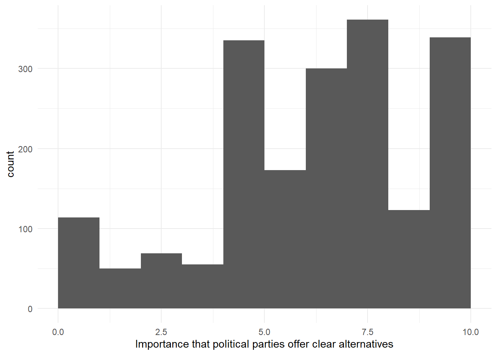
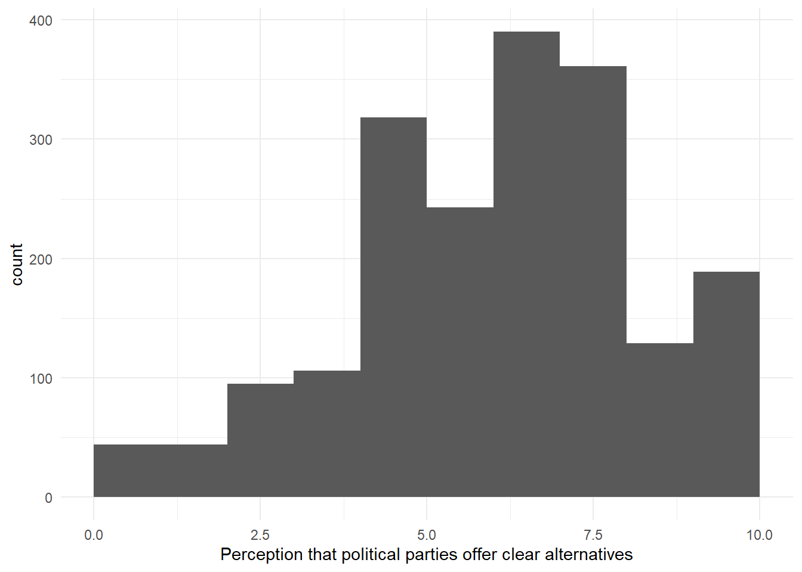

pacman::p_load(
"tidyverse"
)Asynchronous session: ESS Data
Week 05
In this asynchronous session, you can follow along the code first and then extend it in your own RStudio. The goal is to apply and thus practice learnings from our last sessions (descriptives & visualizations). In order to run the following code, you need only the tidyverse:
The ESS
Using ESS data for research
The ESS data allows us to conduct empirical research
We can study political phenomena
at specific points in time or biannually over multiple years (2002 - 2020)
in single countries or across multiple European countries and beyond (39 countries have participated at least once)
However, it is difficult to make causal claims as this is not a panel data set!
Using ESS data for research
The ESS includes regular survey items (party affiliation, political interest, …), and multiple rotating modules in each survey wave. For example:
Round 10: Democracy
Round 8: Climate change
Round 7: Immigration
Take some time to look at the ESS website. Especially, at the Data (Portal). Can you find any interesting variables for your own research ideas?
Understandings of democracy in Austria
Let us investigate how citizens across Europe view democracy using ESS Round 10.
First, we start by mapping views on democracy in Austria:
dfprtal: How important you think it is for democracy in general… …that different political parties offer clear alternatives to one another?
dfprtalc: Please indicate to what extent you think each of the following statements applies in [Country]. Different political parties in [Country] offer clear alternatives to one another.
Scales range from 0 -10; higher values indicate higher importance/agreement. It is IMPORTANT to look at the codebook!
Understandings of democracy in Austria
You can find the full data set for round 10 on OLAT -> Folder -> Week 5 -> ESS10_ESS10SC. Data for only Austria is stored in ess_10_austria.rda.
# You can find the .rda file on OLAT. This loads the dataframe "ess_10_austria"
load("ess_10_austria.rda")
# Let's inspect our dataframe
# str(ess_10_austria)# Alternatively, if you work with the full dataset from round 10, you can use this code to filter only for Austrian respondents:
ess_10_austria <- ESS10_ESS10SC %>%
filter(cntry == "AT")Understandings of democracy in Austria
Having inspected the codebook, we know that respondents can give no answer to question, refuse to answer them, or say that they do not know. We want to exclude these respondents from the analysis.
# Check unique values:
unique(ess_10_austria$dfprtal) [1] 10 7 5 8 99 3 2 4 9 0 1 6# Remove values: 77 (Refusal), 88 (Don't know), 99 (No answer)
ess_10_austria <- ess_10_austria %>%
filter(dfprtal <= 10) %>%
filter(dfprtalc <= 10)Understandings of democracy in Austria
Let’s turn to the first overview of the data. We want to compare the answers to How important you think it is for democracy in general… …that different political parties offer clear alternatives to one another? and Please indicate to what extent you think each of the following statements applies in [Country]. Different political parties in [Country] offer clear alternatives to one another.
This way, we could study if there is a mismatch between citizens’ opinions and their perception. A mismatch could possibly contribute to democratic dissatisfaction.
ggplot(ess_10_austria, aes(x = dfprtal)) +
geom_histogram(binwidth = 1, boundary = 0) +
labs(x = "Importance that political parties offer clear alternatives") +
theme_minimal()
ggplot(ess_10_austria, aes(x = dfprtalc)) +
geom_histogram(binwidth = 1, boundary = 0) +
labs(x = "Perception that political parties offer clear alternatives") +
theme_minimal()
Your turn!
The histogram displays the number of respondents for each value. What graph could you produce that shows the distribution in a different way? Can you show proportions instead of counts?
Identify the variables from the rotating module Understandings and evaluation of different elements of democracy. Contrast the perceptions and the respondents’ opinions on these variables. For example: “The media in [country] are free to criticise the government”.
Are people with the highest mismatch also those who are least satisfied with the way democracy works? You can find this variable also in round 10!
Can you present basic summary statistics for this satisfaction with democracy variable?
Can you find the same patterns in Germany?